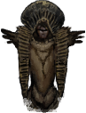

The God of Fear and Hunger
The God of Fear and Hunger is a newly-born being, able to rival the Old Gods. The God of Fear and Hunger is a being on par with the Old Gods, and like Alll-mer, ascended from a human being. The God of Fear and Hunger began life as a human girl, the child of Nilvan, a New God, and Le'garde, a mortal prophesied to bring about a new age. After growing up knowing nothing but misery and suffering, she was taken to the Heart of Darkness, located at the bottom of the dungeon inside of the slain corpse of the God of the Depths. She represents darkness and human suffering, but is seen as a being that motivated humanity to progress out of the medieval era and into modernity in an attempt to end that suffering. On that day, the God of Fear and Hunger took root and began to grow her influence on the surface world.
Although Nilvan had hoped that her daughter would bring light to mankind, true darkness does not breed light: The God of Fear and Hunger was a pure child, a blank slate birthed from the darkest pits of human creation. She was the embodiment of fear and hunger, without even a glimmer of hope. Despite the suffering and stagnation that mankind had endured up to that point, progress came at a price. Fear motivated people while hunger kept them moving forward. People cherished hardship and drew inspiration from it, learning and growing from the difficulties they faced. This era, known as the Cruel Age, brought about advancements not seen since the forgotten ages, with the dark fumes rising from the pipes of modern cities as a direct consequence. In this context, the God of Fear and Hunger, along with the age she ushered in, stands as the catalysts propelling humanity towards technological advancement.


Gallery
-
Perfection circle with sigil
-

Statue of God of Fear and Hunger